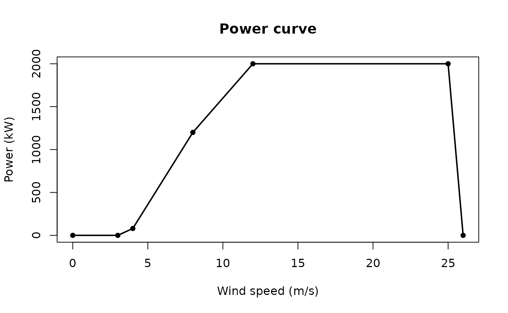

Linear interpolation of a two-column table (ws, power
in kW). Set it with ga_options(power_curve = curve) or
options(windfarmGA.power_curve = curve). While a curve is set,
park energy is the sum of those kW values instead of Cp * v^3.
Cut-in / rated / cut-out still apply only when no table is set.
If hub wind stays on the rated plateau after wakes, every layout
looks the same - use wind in the rising part of the curve.
Supply your own table (manufacturer data); the package does not
ship copyrighted curves.
Examples
curve <- data.frame(
ws = c(0, 3, 4, 8, 12, 25, 26),
power = c(0, 0, 80, 1200, 2000, 2000, 0)
)
plot_power_curve(curve)
